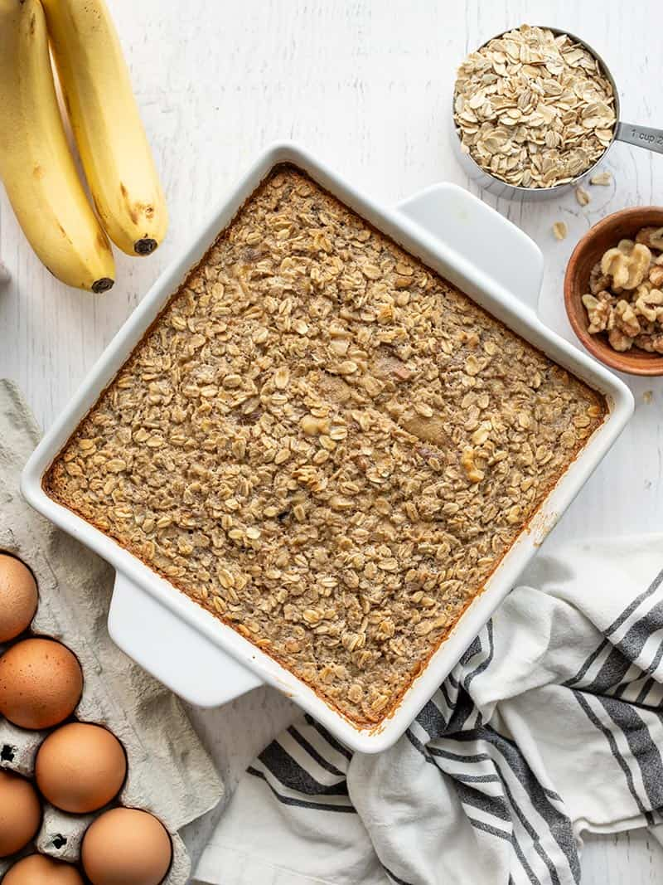

Banana Bread Baked Oatmeal

Description
This dessert-like banana bread baked oatmeal is rich, sweet, hearty, and totally breakfast worthy, thanks to hearty oats and the natural sweetness of bananas. So if you’re tired of using your brown bananas for actual banana bread, you can change things up a bit with this banana bread flavored baked oatmeal, which makes a great make-ahead breakfast meal prep for the week. BONUS: it’s freezer-friendly!
Ingredients
-
1 1/2 cups mashed banana
-
1/3 cup brown sugar
-
2 large eggs
-
1/2 tsp baking powder
-
1/4 tsp cinnamon
-
1/8 tsp nutmeg
-
2 cups milk
-
2 1/2 cups old-fashioned rolled oats
-
1/2 cup chopped walnuts
Steps
-
Preheat the oven to 375
-
Mash bananas with a fork
-
Add the mashed bananas to a large bowl along with the brown sugar, eggs, salt, vanilla, baking powder, cinnamon, and nutmeg. Whisk until the ingredients are combined.
-
Add the milk and whisk until combined again.
-
Finally, stir in the rolled oats and chopped walnuts.
-
Pour the oat mixture into a 9×9-inch casserole dish and transfer to the preheated oven. Bake for 45 minutes, or until it is golden brown on top and around the edges.
-
Serve warm or refrigerate and enjoy cold!